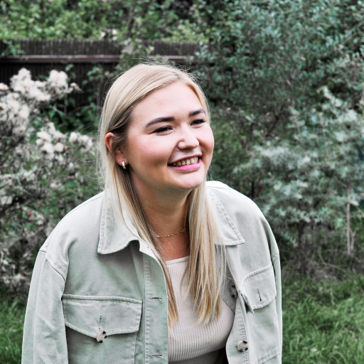

Ahoj, mé jméno je Terka a je mi 25 let. Vystudovala jsem podnikání a administrativu, kde jsem poprvě pronikla do světa marketingu. Pracuji pro malou kosmetickou firmu, kde spravuji sociální sítě, vytvářím různé kampaně a starám se o náš e-shop. Práce je to skvělá, ale chci se začít realizovat trošku jiným směrem a věřím, že mi v tom Czechitas pomůžou! :)
odkaz na profil
